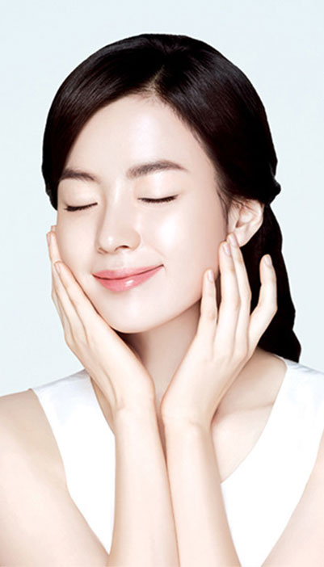

400-103-2278
400-103-2278
Vediclinic 介绍
位于银座的美容诊所“Vediclinic”，以美容皮肤科、美容外科、免疫预防等为主营的自费诊疗。诊疗范围包括应用透明质酸等手段治疗雀斑、皱纹、粉刺等皮肤干燥粗糙，还包括瘦脸、消除脂肪等肉毒杆菌疗法及各种美容注射。以健康的美丽为理念，为您提供放心、安全的医疗美容。
诊疗内容
- 
- 1、 皮肤抗衰：埋线、激光 、注射眼角松弛治疗、成长因子美肌注射
2、 美容整形：眼部 鼻
3、 注入疗法：肉毒杆菌、透明质酸、脂肪溶解注射、高浓度维生素C点滴、“鸡尾酒”点滴
4、 脂肪溶解治疗 BNLS ver2
5、 鼻部治疗: 透明质酸注射、鼻翼缩小、鼻尖缩小
6、 粉刺、毛孔、皱纹、暗沉
7、 最新局部减肥注射
8、 高浓度维生素C点滴、免疫细胞疗法(BAK疗法)
9、 公主复颜抗皱(mint lift 2flex)
10、小脸计划
11、 透明质酸注射
12、减少皱纹（肉毒杆菌注射）
13、牙齿美白
14、双眼皮和眼周美容
15、眼袋（1日美目）
16、过敏性皮炎
17、美腿
18、“鸡尾酒”点滴
19、公主美肌（高频离子导入）